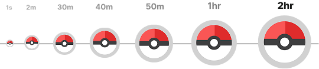
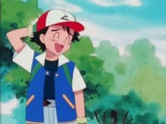
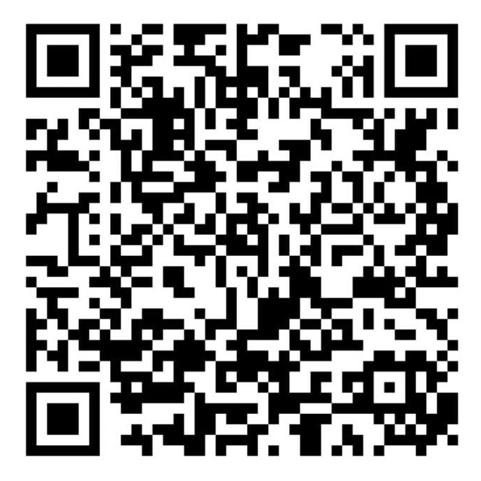

Ustamp
Steps to capture a video
- Ensure you are watching a standard video (not a short), otherwise capturing options will not show.
- Use the 'Capture' button to save the current playback time.
- If you want to remove earlier captures, click the 'X' icon next to the video.
- Copy the URL to share the video with your friends.
- Click on the saved link to watch it from the captured timestamp.
Settings
You can customize your experience using the following settings
- Restore playback - Automatically resumes playback from where you left off the next time you visit the video.
- Auto capture - Enable this feature to capture the current time automatically at a 10-second interval.

You can support in two ways
- Scan this ugly looking QR below and donate some money!

💖
You can do both by the way! 😉